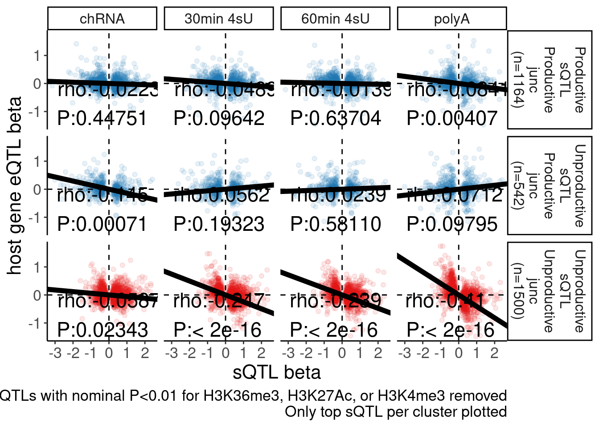

Last updated: 2023-06-26
Checks: 6 1
Knit directory:
ChromatinSplicingQTLs/analysis/
This reproducible R Markdown analysis was created with workflowr (version 1.7.0). The Checks tab describes the reproducibility checks that were applied when the results were created. The Past versions tab lists the development history.
The R Markdown is untracked by Git. To know which version of the R
Markdown file created these results, you’ll want to first commit it to
the Git repo. If you’re still working on the analysis, you can ignore
this warning. When you’re finished, you can run
wflow_publish to commit the R Markdown file and build the
HTML.
Great job! The global environment was empty. Objects defined in the global environment can affect the analysis in your R Markdown file in unknown ways. For reproduciblity it’s best to always run the code in an empty environment.
The command set.seed(20191126) was run prior to running
the code in the R Markdown file. Setting a seed ensures that any results
that rely on randomness, e.g. subsampling or permutations, are
reproducible.
Great job! Recording the operating system, R version, and package versions is critical for reproducibility.
Nice! There were no cached chunks for this analysis, so you can be confident that you successfully produced the results during this run.
Great job! Using relative paths to the files within your workflowr project makes it easier to run your code on other machines.
Great! You are using Git for version control. Tracking code development and connecting the code version to the results is critical for reproducibility.
The results in this page were generated with repository version 4ffc2bc. See the Past versions tab to see a history of the changes made to the R Markdown and HTML files.
Note that you need to be careful to ensure that all relevant files for
the analysis have been committed to Git prior to generating the results
(you can use wflow_publish or
wflow_git_commit). workflowr only checks the R Markdown
file, but you know if there are other scripts or data files that it
depends on. Below is the status of the Git repository when the results
were generated:
Ignored files:
Ignored: .DS_Store
Ignored: .Rhistory
Ignored: .Rproj.user/
Ignored: analysis/.Rhistory
Ignored: code/.DS_Store
Ignored: code/.RData
Ignored: code/._report.html
Ignored: code/.ipynb_checkpoints/
Ignored: code/.snakemake/
Ignored: code/APA_Processing/
Ignored: code/Alignments/
Ignored: code/ChromHMM/
Ignored: code/ENCODE/
Ignored: code/ExpressionAnalysis/
Ignored: code/ExtractPhenotypeBedByGenotype.py
Ignored: code/FastqFastp/
Ignored: code/FastqFastpSE/
Ignored: code/FastqSE/
Ignored: code/FineMapping/
Ignored: code/GTEx/
Ignored: code/Genotypes/
Ignored: code/H3K36me3_CutAndTag.pdf
Ignored: code/IntronSlopes/
Ignored: code/LR.bed
Ignored: code/LR.seq.bed
Ignored: code/LongReads/
Ignored: code/Metaplots/
Ignored: code/Misc/
Ignored: code/MiscCountTables/
Ignored: code/Multiqc/
Ignored: code/Multiqc_chRNA/
Ignored: code/NonCodingRNA/
Ignored: code/NonCodingRNA_annotation/
Ignored: code/PairwisePi1Traits.P.all.txt.gz
Ignored: code/PeakCalling/
Ignored: code/Phenotypes/
Ignored: code/PlotGruberQTLs/
Ignored: code/PlotQTLs/
Ignored: code/ProCapAnalysis/
Ignored: code/QC/
Ignored: code/QTL_SNP_Enrichment/
Ignored: code/QTLs/
Ignored: code/RPKM_tables/
Ignored: code/ReadLengthMapExperiment/
Ignored: code/ReadLengthMapExperimentResults/
Ignored: code/ReadLengthMapExperimentSpliceCounts/
Ignored: code/ReferenceGenome/
Ignored: code/Rplots.pdf
Ignored: code/Session.vim
Ignored: code/SmallMolecule/
Ignored: code/SplicingAnalysis/
Ignored: code/TODO
Ignored: code/Tehranchi/
Ignored: code/alias/
Ignored: code/bigwigs/
Ignored: code/bigwigs_FromNonWASPFilteredReads/
Ignored: code/config/.DS_Store
Ignored: code/config/._.DS_Store
Ignored: code/config/.gwas_table.tsv.swp
Ignored: code/config/.ipynb_checkpoints/
Ignored: code/config/config.local.yaml
Ignored: code/dag.pdf
Ignored: code/dag.png
Ignored: code/dag.svg
Ignored: code/data/
Ignored: code/debug.ipynb
Ignored: code/debug_python.ipynb
Ignored: code/deepTools/
Ignored: code/featureCounts/
Ignored: code/featureCountsBasicGtf/
Ignored: code/genome_config.yaml
Ignored: code/gwas_summary_stats/
Ignored: code/hyprcoloc/
Ignored: code/igv_session.xml
Ignored: code/isoseqbams/
Ignored: code/log
Ignored: code/logs/
Ignored: code/notebooks/.ipynb_checkpoints/
Ignored: code/pi1/
Ignored: code/polyA.Splicing.Subset_YRI.NominalPassForColoc.bed.bgz
Ignored: code/rules/.ipynb_checkpoints/
Ignored: code/rules/OldRules/
Ignored: code/rules/notebooks/
Ignored: code/salmontest/
Ignored: code/scratch/
Ignored: code/scripts/.ipynb_checkpoints/
Ignored: code/scripts/GTFtools_0.8.0/
Ignored: code/scripts/__pycache__/
Ignored: code/scripts/liftOverBedpe/liftOverBedpe.py
Ignored: code/snakemake.dryrun.log
Ignored: code/snakemake.log
Ignored: code/snakemake.sbatch.log
Ignored: code/snakemake_profiles/slurm/__pycache__/
Ignored: code/test.introns.bed
Ignored: code/test.introns2.bed
Ignored: code/test.log
Ignored: code/tracks.xml
Ignored: data/.DS_Store
Ignored: data/GWAS_catalog_summary_stats_sources/._list_gwas_summary_statistics_6_Apr_2022-10.csv
Ignored: data/GWAS_catalog_summary_stats_sources/._list_gwas_summary_statistics_6_Apr_2022-11.csv
Ignored: data/GWAS_catalog_summary_stats_sources/._list_gwas_summary_statistics_6_Apr_2022-2.csv
Ignored: data/GWAS_catalog_summary_stats_sources/._list_gwas_summary_statistics_6_Apr_2022-3.csv
Ignored: data/GWAS_catalog_summary_stats_sources/._list_gwas_summary_statistics_6_Apr_2022-4.csv
Ignored: data/GWAS_catalog_summary_stats_sources/._list_gwas_summary_statistics_6_Apr_2022-5.csv
Ignored: data/GWAS_catalog_summary_stats_sources/._list_gwas_summary_statistics_6_Apr_2022-6.csv
Ignored: data/GWAS_catalog_summary_stats_sources/._list_gwas_summary_statistics_6_Apr_2022-7.csv
Ignored: data/GWAS_catalog_summary_stats_sources/._list_gwas_summary_statistics_6_Apr_2022-8.csv
Ignored: data/GWAS_catalog_summary_stats_sources/._list_gwas_summary_statistics_6_Apr_2022.csv
Ignored: data/Metaplots/.DS_Store
Untracked files:
Untracked: analysis/20230622_LookupCarolsSNP.Rmd
Untracked: analysis/20230623_BetaBetaScatterForChao.Rmd
Untracked: code/scripts/Tidy_GTEx_SummaryStats.py
Unstaged changes:
Modified: analysis/MakeFinalFigs_Fig2.Rmd
Modified: analysis/MakeFinalFigs_Fig3.Rmd
Modified: code/config/gwas_table.tsv
Modified: code/scripts/hyprcoloc_gwas2.R
Note that any generated files, e.g. HTML, png, CSS, etc., are not included in this status report because it is ok for generated content to have uncommitted changes.
There are no past versions. Publish this analysis with
wflow_publish() to start tracking its development.
knitr::opts_chunk$set(echo = TRUE, warning = F, message = F)
library(tidyverse)── Attaching packages ─────────────────────────────────────── tidyverse 1.3.1 ──✔ ggplot2 3.3.6 ✔ purrr 0.3.4
✔ tibble 3.1.7 ✔ dplyr 1.0.9
✔ tidyr 1.2.0 ✔ stringr 1.4.0
✔ readr 2.1.2 ✔ forcats 0.5.1── Conflicts ────────────────────────────────────────── tidyverse_conflicts() ──
✖ dplyr::filter() masks stats::filter()
✖ dplyr::lag() masks stats::lag()library(RColorBrewer)
library(data.table)
Attaching package: 'data.table'The following objects are masked from 'package:dplyr':
between, first, lastThe following object is masked from 'package:purrr':
transposelibrary(broom)
# Set theme
theme_set(
theme_classic() +
theme(text=element_text(size=16, family="Helvetica")))
# I use layer a lot, to rotate long x-axis labels
Rotate_x_labels <- theme(axis.text.x = element_text(angle = 45, vjust = 1, hjust=1))The sQTL beta vs eQTL beta scatter result hasn’t been reproduced by Chao, at least not to the extent that I saw a strong negative correlation (spearman rho~0.4) in polyA eQTL vs polyA sQTL for unproductive introns. Let me reproduce that plot here so Chao can better troubleshoot exactly what the discrepancy is.
I
/project2/yangili1/bjf79/ChromatinSplicingQTLs/code/pi1/PairwisePi1Traits.P.all.txt.gz
is a file where I take all the top SNPs for a trait (P1), and lookup the
corresponding summary stats for a second trait (P2). Every phenotype has
a phenotype class (PC; PC1 for P1, or PC2 for P2). Chao, feel free to
use this file and inspect it, sorry if the column labels are confusing.
From this file, the general approach will be to look for sQTLs (where P1
is splicing trait), and look at the effect sizes in expression traits
(where P2 is an expression trait), while filtering out sQTLs where any
P2 is a significant hQTL. All P1’s in this file are significant
(FDR<0.1).
PC1.PossibleValues <- c("polyA.Splicing")
PC2.PossibleValues <-c("Expression.Splicing", "chRNA.Expression.Splicing","H3K4ME3", "H3K36ME3", "H3K27AC", "H3K4ME1", "MetabolicLabelled.30min", "MetabolicLabelled.60min")
dat <- fread("../code/pi1/PairwisePi1Traits.P.all.txt.gz") %>%
filter((PC1 %in% PC1.PossibleValues) & (PC2 %in% PC2.PossibleValues))
head(dat) PC1 P1 GeneLocus
1: polyA.Splicing 1:11213566:11228668:clu_262_- ENSG00000198793.13
2: polyA.Splicing 1:11213566:11228668:clu_262_- ENSG00000198793.13
3: polyA.Splicing 1:11213566:11228668:clu_262_- ENSG00000198793.13
4: polyA.Splicing 1:11213566:11228668:clu_262_- ENSG00000198793.13
5: polyA.Splicing 1:11213566:11228668:clu_262_- ENSG00000198793.13
6: polyA.Splicing 1:11213566:11228668:clu_262_- ENSG00000198793.13
p_permutation.x beta.x beta_se.x singletrait_topvar.x
1: 0.00449478 0.371906 0.0695477 1:11264089:CA:C
2: 0.00449478 0.371906 0.0695477 1:11264089:CA:C
3: 0.00449478 0.371906 0.0695477 1:11264089:CA:C
4: 0.00449478 0.371906 0.0695477 1:11264089:CA:C
5: 0.00449478 0.371906 0.0695477 1:11264089:CA:C
6: 0.00449478 0.371906 0.0695477 1:11264089:CA:C
singletrait_topvar_chr.x singletrait_topvar_pos.x FDR.x
1: chr1 11264085 0.04536886
2: chr1 11264085 0.04536886
3: chr1 11264085 0.04536886
4: chr1 11264085 0.04536886
5: chr1 11264085 0.04536886
6: chr1 11264085 0.04536886
PC2 P2 p_permutation.y beta.y
1: Expression.Splicing ENSG00000198793.13 0.019128200 -0.119659
2: chRNA.Expression.Splicing ENSG00000198793.13 0.000565087 -0.533056
3: MetabolicLabelled.30min ENSG00000198793.13 0.346267000 0.235171
4: MetabolicLabelled.60min ENSG00000198793.13 0.660299000 -0.311955
5: H3K27AC H3K27AC_peak_885 0.034002300 1.076300
6: H3K27AC H3K27AC_peak_901 0.065683900 -0.378248
beta_se.y singletrait_topvar.y singletrait_topvar_chr.y
1: 0.0283057 1:11324733:C:T chr1
2: 0.0999955 1:11033952:ACACACACAC:A chr1
3: 0.0682238 1:11035367:A:T chr1
4: 0.0939992 1:11341688:G:A chr1
5: 0.2495070 1:11312860:G:A chr1
6: 0.0891486 1:11335426:T:C chr1
singletrait_topvar_pos.y FDR.y trait.x.p.in.y x.beta.in.y
1: 11324733 0.006570641 0.305897 0.03589860
2: 11033951 0.004502949 0.926474 -0.00793427
3: 11035367 0.419053116 0.828525 0.02134310
4: 11341688 0.550513014 0.663203 -0.05143100
5: 11312860 0.173421875 0.772355 0.05620940
6: 11335426 0.242401179 0.406857 -0.12449800
x.beta_se.in.y
1: 0.0350216
2: 0.0857210
3: 0.0981314
4: 0.1175410
5: 0.1935470
6: 0.1491950Intron.Annotations <- read_tsv("../data/IntronAnnotationsFromYang.tsv.gz") %>%
mutate(IntronName = paste(chrom, start, end, strand, sep=":"))Let me do a little data tidying before plotting…
dat.sQTLs.eQTLs.ForScatter <- dat %>%
mutate(IntronName = str_replace(P1, "^(.+?:)clu_.+?([+-])$", "chr\\1\\2")) %>%
mutate(ClusterName = str_replace(P1, "^(.+?:).+?(clu_.+?[+-])$", "chr\\1\\2")) %>%
left_join(Intron.Annotations)
PC1.filter = c("polyA.Splicing")
PC2.filter = c( "chRNA.Expression.Splicing" , "MetabolicLabelled.30min", "MetabolicLabelled.60min", "Expression.Splicing")
PC2.SignificanceFilter <- c("H3K4ME3", "H3K27AC", "H3K36ME3")
dat.sQTLs.eQTLs.ForScatter.ToPlot <- dat.sQTLs.eQTLs.ForScatter %>%
# filter for sQTLs, where P1 is a splicing trait
filter(PC1 %in% PC1.filter) %>%
# sanity check filter to make sure I am looking at junctions in the gene that I am supposed to be. The GeneLocus is the gene intersecting the junction from my file, the gene is the gene from Yangs splice junction annotations
filter(GeneLocus == gene) %>%
# sanity check filter to make sure I am looking at significant sQTLs, even though they should already be filtered for that
filter(FDR.x < 0.1) %>%
# filter out any sQTLs where the topSNP is nominally significant for any H3K4ME3, H3K27AC, or H3K36ME3 trait
group_by(P1) %>%
filter(!any((PC2 %in% PC2.SignificanceFilter) & (trait.x.p.in.y < 0.01))) %>%
ungroup() %>%
# filter for rows where P2 is an expression trait
filter(PC2 %in% PC2.filter) %>%
# filter out the sQTLs in non protein coding genes
filter(SuperAnnotation %in% c("UnannotatedJunc_UnproductiveCodingGene", "AnnotatedJunc_ProductiveCodingGene", "AnnotatedJunc_UnproductiveCodingGene", "UnannotatedJunc_ProductiveCodingGene")) %>%
# clasify sQTLs as unproductive if any of the introns in the cluster are unproductive introns.
group_by(PC1, ClusterName) %>%
mutate(sQTL_type = case_when(
any(SuperAnnotation %in% c("UnannotatedJunc_UnproductiveCodingGene", "AnnotatedJunc_UnproductiveCodingGene")) ~ "Unproductive sQTL",
TRUE ~ "Productive sQTL"
)) %>%
ungroup() %>%
# For simplicity in downstream step, recode introns as either unrproductive or productive
mutate(ProductiveOrUnproductive_junction = recode(SuperAnnotation, "UnannotatedJunc_UnproductiveCodingGene"="Unproductive junc", "AnnotatedJunc_ProductiveCodingGene"="Productive junc", "AnnotatedJunc_UnproductiveCodingGene"="Unproductive junc", "UnannotatedJunc_ProductiveCodingGene"="Productive junc")) %>%
# Keep just the strongest unproductive junction per unproductive sQTL, and the strongest productive junction per productive sQTL
group_by(ClusterName, P2, ProductiveOrUnproductive_junction) %>%
filter(abs(beta.x) == max(abs(beta.x))) %>%
ungroup() %>%
# sanity check that I am only plotting one point per gene in each facet. The previous filter for max(beta) might actually still keep more than one intron if there are ties.
group_by(ClusterName, PC2, P2, ProductiveOrUnproductive_junction) %>%
sample_n(1) %>%
ungroup() %>%
# recode some things for better labels
mutate(PC2 = recode(PC2, !!!c("chRNA.Expression.Splicing"="chRNA" , "MetabolicLabelled.30min"="30min 4sU", "MetabolicLabelled.60min"="60min 4sU", "Expression.Splicing"="polyA"))) %>%
# redefine factor levels so order of facets is sensible
mutate(PC2 = factor(PC2, levels=c("chRNA", "30min 4sU", "60min 4sU", "polyA"))) %>%
mutate(sQTL_int_type = str_glue("{sQTL_type}\n{ProductiveOrUnproductive_junction}"))
dat.sQTLs.eQTLs.ForScatter.ToPlot.labels <- dat.sQTLs.eQTLs.ForScatter.ToPlot %>%
count(sQTL_int_type, PC2) %>%
distinct(sQTL_int_type, .keep_all=T) %>%
dplyr::select(n, sQTL_int_type) %>%
mutate(AnnotationLabel = paste0(sQTL_int_type, " (n=", n, ")"))
dat.sQTLs.eQTLs.ForScatter.ToPlot %>%
distinct(ClusterName, .keep_all=T) %>%
count(sQTL_type)# A tibble: 2 × 2
sQTL_type n
<chr> <int>
1 Productive sQTL 1160
2 Unproductive sQTL 1498sQTL.eQTL.beta.beta <- dat.sQTLs.eQTLs.ForScatter.ToPlot %>%
left_join(dat.sQTLs.eQTLs.ForScatter.ToPlot.labels, by="sQTL_int_type") %>%
nest(-sQTL_int_type, -PC2) %>%
mutate(cor=map(data,~cor.test(.x$beta.x, .x$x.beta.in.y, method = "sp"))) %>%
mutate(tidied = map(cor, tidy)) %>%
unnest(tidied, .drop = T) %>%
unnest(data) %>%
ggplot(aes(x=beta.x, y=x.beta.in.y, color=ProductiveOrUnproductive_junction)) +
geom_point(alpha=0.1) +
# geom_smooth(method = "tls", se = FALSE, color = "red", method='bootstrap') +
# geom_smooth(method='lm', color='black') +
geom_vline(xintercept=0, linetype='dashed') +
geom_hline(yintercept=0, linetype='dashed') +
scale_color_manual(values=c("Productive junc"="#1f78b4", "Unproductive junc"="#e31a1c")) +
geom_abline(data = . %>%
distinct(AnnotationLabel, PC2, .keep_all=T),
aes(slope=estimate, intercept=0), size=2) +
geom_text(
data = . %>%
distinct(AnnotationLabel, PC2, .keep_all=T) %>%
mutate(R=signif(estimate, 3), P=format.pval(p.value, 3)) %>%
mutate(label = str_glue("rho:{R}\nP:{P}")),
aes(x=-Inf, y=-Inf, label=label),
hjust=-.1, vjust=-0.1, color='black', size=6
) +
facet_grid(AnnotationLabel ~ PC2, labeller = label_wrap_gen(10)) +
theme(strip.text = element_text(size = 12), legend.position='none') +
labs(caption = "FDR<10% sQTLs. sQTLs with nominal P<0.01 for H3K36me3, H3K27Ac, or H3K4me3 removed\nOnly top sQTL per cluster plotted", y="host gene eQTL beta", x="sQTL beta")
sQTL.eQTL.beta.beta
The numbers of unproductive sQTLs is a bit more than my previous plot. At the moment I don’t have time to go through my code to figure out exactly why there are 1498 unproductive sQTL clusters here, instead of the like 998 that i previously plotted. But I think this is still right.
Let me write out the underlying data for Chao
write_tsv(dat.sQTLs.eQTLs.ForScatter.ToPlot, "/project2/yangili1/bjf79/scratch/DataForChao.tsv.gz")
sessionInfo()R version 4.2.0 (2022-04-22)
Platform: x86_64-pc-linux-gnu (64-bit)
Running under: CentOS Linux 7 (Core)
Matrix products: default
BLAS/LAPACK: /software/openblas-0.3.13-el7-x86_64/lib/libopenblas_haswellp-r0.3.13.so
locale:
[1] LC_CTYPE=en_US.UTF-8 LC_NUMERIC=C LC_TIME=C
[4] LC_COLLATE=C LC_MONETARY=C LC_MESSAGES=C
[7] LC_PAPER=C LC_NAME=C LC_ADDRESS=C
[10] LC_TELEPHONE=C LC_MEASUREMENT=C LC_IDENTIFICATION=C
attached base packages:
[1] stats graphics grDevices utils datasets methods base
other attached packages:
[1] broom_0.8.0 data.table_1.14.2 RColorBrewer_1.1-3 forcats_0.5.1
[5] stringr_1.4.0 dplyr_1.0.9 purrr_0.3.4 readr_2.1.2
[9] tidyr_1.2.0 tibble_3.1.7 ggplot2_3.3.6 tidyverse_1.3.1
loaded via a namespace (and not attached):
[1] Rcpp_1.0.8.3 lubridate_1.8.0 assertthat_0.2.1 rprojroot_2.0.3
[5] digest_0.6.29 utf8_1.2.2 R6_2.5.1 cellranger_1.1.0
[9] backports_1.4.1 reprex_2.0.1 evaluate_0.15 highr_0.9
[13] httr_1.4.3 pillar_1.7.0 rlang_1.0.2 readxl_1.4.0
[17] rstudioapi_0.13 jquerylib_0.1.4 R.oo_1.24.0 R.utils_2.11.0
[21] rmarkdown_2.14 labeling_0.4.2 bit_4.0.4 munsell_0.5.0
[25] compiler_4.2.0 httpuv_1.6.5 modelr_0.1.8 xfun_0.30
[29] pkgconfig_2.0.3 htmltools_0.5.2 tidyselect_1.1.2 workflowr_1.7.0
[33] fansi_1.0.3 crayon_1.5.1 tzdb_0.3.0 dbplyr_2.1.1
[37] withr_2.5.0 later_1.3.0 R.methodsS3_1.8.1 grid_4.2.0
[41] jsonlite_1.8.0 gtable_0.3.0 lifecycle_1.0.1 DBI_1.1.2
[45] git2r_0.30.1 magrittr_2.0.3 scales_1.2.0 vroom_1.5.7
[49] cli_3.3.0 stringi_1.7.6 farver_2.1.0 fs_1.5.2
[53] promises_1.2.0.1 xml2_1.3.3 bslib_0.3.1 ellipsis_0.3.2
[57] generics_0.1.2 vctrs_0.4.1 tools_4.2.0 bit64_4.0.5
[61] glue_1.6.2 hms_1.1.1 parallel_4.2.0 fastmap_1.1.0
[65] yaml_2.3.5 colorspace_2.0-3 rvest_1.0.2 knitr_1.39
[69] haven_2.5.0 sass_0.4.1